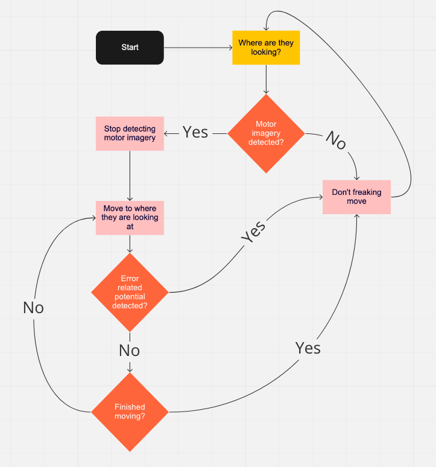

Brain

So I had the opportunity to co-found a club call the Melbourne Bioinnovation Student Initiative (MBSI)
We are a group of undergraduate, postgraduate and medical students with backgrounds across science, engineering and medicine. We share an interest in technology and its applications in medicine and the biological sciences.
Our aim is to help students and other young people explore this space by providing opportunities for multidisciplinary collaboration and learning.
After the hard work I put in with Dr Sam John working on a BCI project, I thought why not start a team and build bigger things?
Since by starting the project it would serve to target some key things I'm passionate about:
Steven Hawking, we gotchu fam
Traditional BCI wheelchairs have a few problems:
We will be adopting the way-pointing system that ships use. This is done by travelling to a point determined by the user and the directions are generated autonomously as opposed to how you would drive a car which is deciding on each individual direction to get to a point
To summarise:
For more information about motor imagery, check out my personal BCI project here
All specifications are determined from the literature

We are using MediaPipe Iris solution, a model developed by CSAIL at MIT which works really well.
|
There is no problem statement, the focus of this was to create a communication device for the BCI wheelchair that would benefit from the EEG system and also be modular to perform typing or turn on the lights in the house for example.
The P300 is a signal that arises out of surprise; something that you did not expect occured. If you were staring at a letter and the letter happened to light it, it would cause a P300 to occur. Now imagine that we flash the rows and columns, at some point your letter will have flashed twice because in a grid of letters it holds a place in a row and column
When we detect two P300 signals then we know what letter you were looking at because we know when each row and column would have flashed.
Here is a video to illustrate the process
Based off the existing literature we have designed this pipeline:

We are using this dataset from kaggle. We have also published our pipeline here!
Below are some the results for decoding all the individual P300 flashes, the main takeaway is that performance is definitely different between subjects.

So the maximum accuracy is about 78% here, this is not so bad because we can repeat the trial many times for the same letter. All the subject has to do is stare for a bit longer. This means than with 10 repeats we can actually get 100% letter accuracy!
Below is a graph showing the number of letter repeats very the accuracy of the letter decoding

So to summarise, we can definitely show that P300 spelling is possible. But also accuracy is subject dependent and that it's also possible to speed up the letter decoding by reducing the number of repetitions.